k8s：(5)基于Kubernetes+Istio实现灰度发布案例
案例描述
（1）了解Istio的基本使用。
（2）了解基于Istio实现流量治理。
（3）了解基于Istio实现服务发布。
规划节点
节点规划，见表1。
表1 节点规划
| IP | 主机名 | 节点 |
|---|---|---|
| 10.24.2.5 | k8s-master-node1 | master节点、仓库节点 |
| 10.24.2.6 | k8s-worker-node1 | node节点 |
基础准备
已基于软件包chinaskills_cloud_paas_v2.0.iso部署完Kubernetes集群，并将提供的软件包ServiceMesh.tar.gz上传至master节点/root目录下
案例实施
部署Bookinfo应用
Bookinfo简介
Bookinfo应用模仿在线书店的一个分类，显示一本书的信息。页面上会显示一本书的描述，书籍的细节（ISBN、页数等），以及关于这本书的一些评论。
Bookinfo应用分为四个单独的微服务：
● productpage：调用details和reviews两个微服务，用来生成页面；
● details：包含书籍的信息；
● reviews：包含书籍相关的评论，会调用ratings微服务；
● ratings：包含由书籍评价组成的评级信息。
reviews微服务有3个版本：
● v1版本不会调用ratings服务；
● v2版本会调用ratings服务，并使用1到5个黑色星形图标来显示评分信息；
● v3版本会调用ratings服务，并使用1到5个红色星形图标来显示评分信息。
Bookinfo应用的端到端架构如图所示：
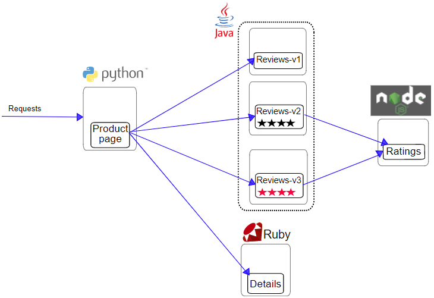
图1
Bookinfo应用中的几个微服务是由不同的语言编写的。这些服务对Istio并无依赖，但是构成了一个有代表性的服务网格的例子：它由多个服务、多个语言构成，并且reviews服务具有多个版本。
部署应用程序
解压软件包并导入镜像：
1 | [root@k8s-master-node1 ~]# tar -zxf ServiceMesh.tar.gz |
部署应用到Kubernetes集群：
1 | [root@k8s-master-node1 ServiceMesh]# kubectl apply -f bookinfo/bookinfo.yaml |
查看Pod状态：
1 | [root@k8s-master-node1 ServiceMesh]# kubectl get pods |
启用对应用程序的外部访问
现在Bookinfo应用程序已成功运行，需要使应用程序可以从外部访问，可以用Istio Gateway来实现这个目标。
使用网关为网格来管理入站和出站流量，可以指定要进入或流出网格的流量。网关配置被用于运行在网格边界的独立Envoy代理，而不是服务工作负载的sidecar代理。
与Kubernetes Ingress API这种控制进入系统流量的其他机制不同，Istio网关充分利用了流量路由的强大能力和灵活性。Istio的网关资源可以配置4-6层的负载均衡属性，如对外暴露的端口、TLS设置等。作为替代应用层流量路由（L7）到相同的API资源，绑定一个常规的Istio虚拟服务到网关，这样就可以像管理网格中其他数据平面的流量一样去管理网关流量。
网关主要用于管理进入的流量，也可以配置出口网关。出口网关为流出网格的流量配置一个专用的出口节点，这可以限制哪些服务可以或应该访问外部网络，或者启用出口流量安全控制为网格添加安全性。
Gateway配置文件如下：
1 | [root@k8s-master-node1 ServiceMesh]# cat bookinfo-gateway.yaml |
这个网关指定所有HTTP流量通过80端口流入网格，然后把网关绑定到虚拟服务上。
为应用程序定义Ingress网关：
1 | [root@k8s-master-node1 ServiceMesh]# kubectl apply -f bookinfo-gateway.yaml |
确认网关创建完成：
1 | [root@k8s-master-node1 ServiceMesh]# kubectl get gateway |
查看Ingress Gateway：
1 | [root@k8s-master-node1 ServiceMesh]# kubectl get svc -n istio-system |
可以看到Gateway 80端口对应的NodePort端口是22092，在浏览器上通过http://master_IP:22092/productpage访问Bookinfo应用，如图所示：
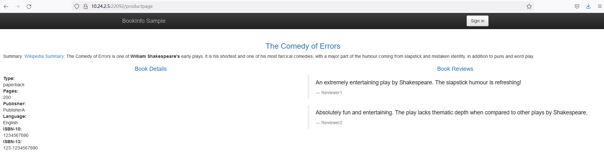
图2
生产测试
使用Curl工具向Bookinfo应用发送请求产生模拟流量。
1 | [root@k8s-master-node1 ServiceMesh]# cat curl.sh |
后台运行脚本：
1 | [root@k8s-master-node1 ServiceMesh]# chmod +x curl.sh |
启用Istio
在productpage启用Istio
在productpage微服务中，启用Istio。这个应用的其他部分会继续照原样运行。可以一个微服务一个微服务的逐步启用Istio。启用Istio在微服务中是无侵入的，不用修改微服务代码或者破坏应用，它也能够持续运行并且为用户请求服务。
在使用Istio控制Bookinfo版本路由之前，需要在目标规则中定义好可用的版本。目标规则是Istio流量路由功能的关键部分。可以将虚拟服务视为将流量如何路由到给定目标地址，然后使用目标规则来配置该目标的流量。在评估虚拟服务路由规则之后，目标规则将应用于流量的“真实”目标地址。
编写目标规则配置文件：
1 | [root@k8s-master-node1 ServiceMesh]# cat destination-rule-all.yaml |
创建默认目标规则：
1 | [root@k8s-master-node1 ServiceMesh]# kubectl apply -f destination-rule-all.yaml |
重新部署productpage微服务，启用Istio：
1 | [root@k8s-master-node1 ServiceMesh]# cat bookinfo/bookinfo.yaml | istioctl kube-inject -f - | kubectl apply -l app=productpage -f - |
检查productpage的Pod并且查看每个副本的两个容器。第一个容器是微服务本身的，第二个是连接到它的Sidecar代理：
1 | [root@k8s-master-node1 ServiceMesh]# kubectl get pods |
Kubernetes采取无侵入的和逐步的滚动更新方式用启用Istio的Pod替换了原有的Pod。Kubernetes只有在新的Pod开始运行的时候才会终止老的Pod，它透明地将流量一个一个地切换到新的Pod上。也就是说，它不会在声明一个新的Pod之前结束一个或者以上的Pod。这些操作都是为了防止破坏应用，因此在注入Istio的过程中应用能够持续工作。
在浏览器上登录Grafana（http://master_IP:33000），如图所示：
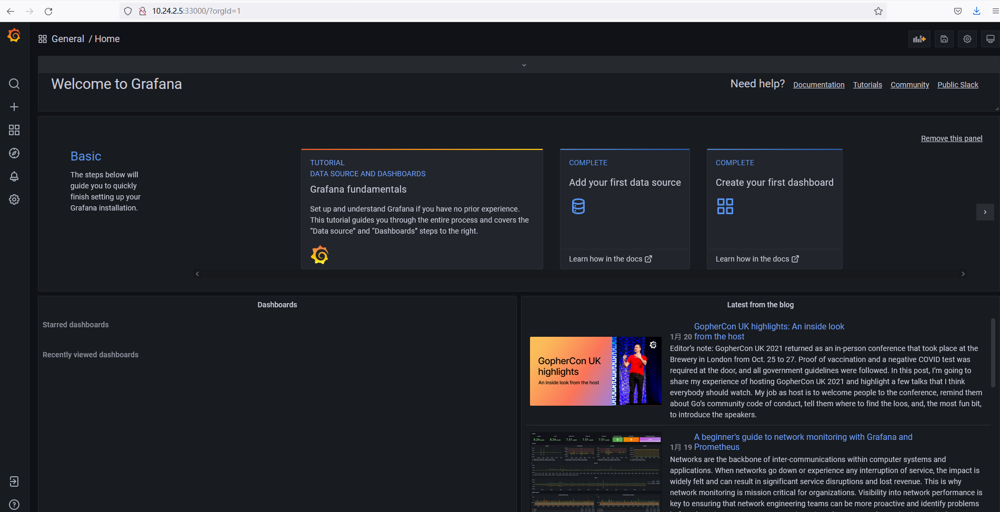
图3
切换到Dashboard管理界面，如图所示：
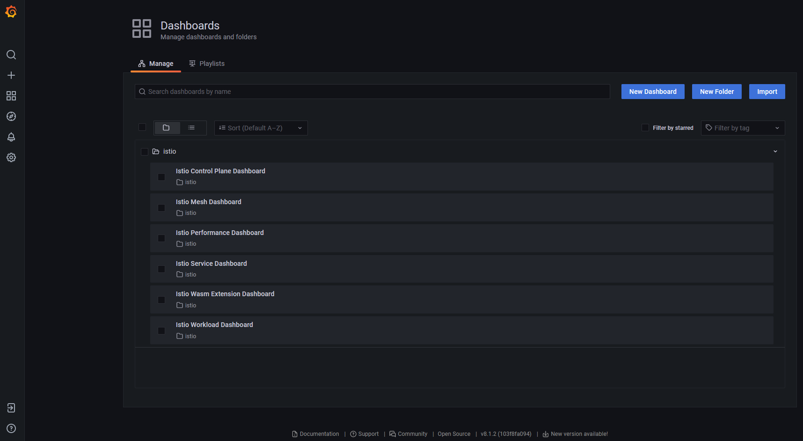
图4
选择Istio Mesh Dashboard，如图所示：
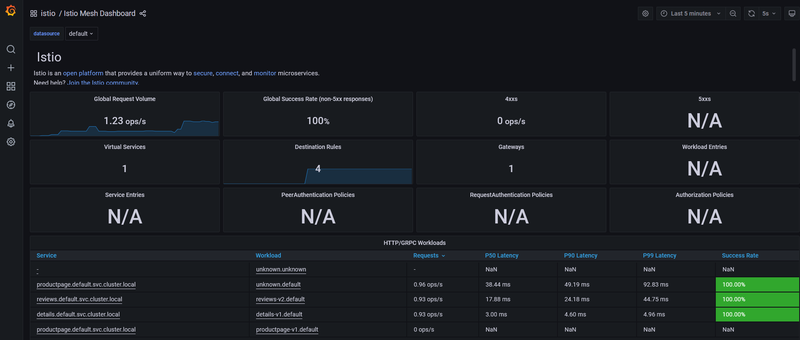
图5
切换到Istio Service Dashboard仪表盘，在Service中选择productpage，如图所示：
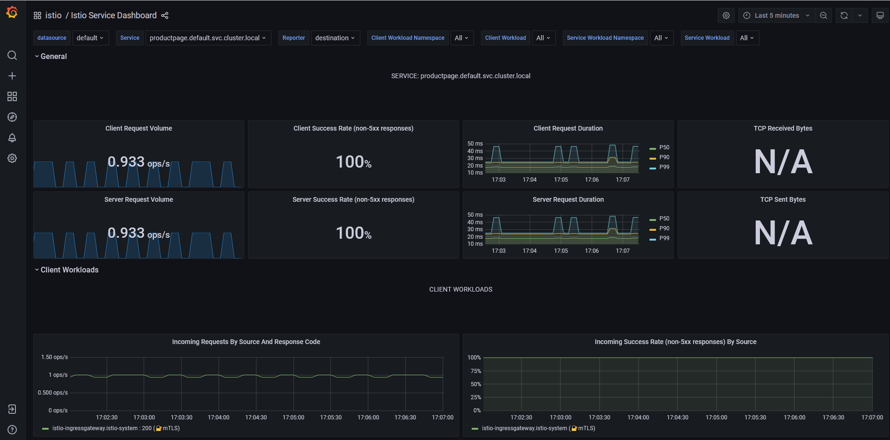
图6
在所有微服务中启用Istio
所有服务启用Istio：
1 | [root@k8s-master-node1 ServiceMesh]# cat bookinfo/bookinfo.yaml | istioctl kube-inject -f - | kubectl apply -l app!=productpage -f - |
查看应用程序Pod，现在每个Pod的两个容器，一个容器是微服务本身，另一个是连接到它的Sidecar代理：
1 | [root@k8s-master-node1 ServiceMesh]# kubectl get pods |
再次查看Istio Mesh Dashboard，会发现当前命名空间下所有服务都会出现在服务列表中，如图所示：
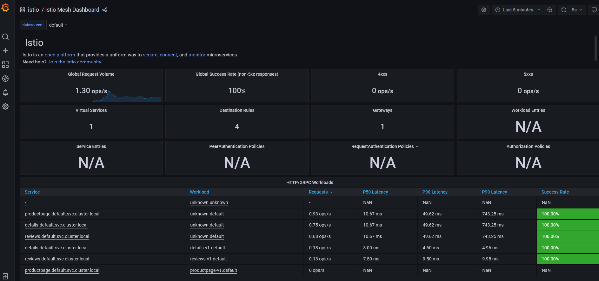
图7
通过Kiali控住台（http://master_IP:20001）的可视化界面来查看应用程序的拓扑结构，点击Graph按钮，在Namespace下拉菜单中选择命名空间，然后在Display下拉菜单中选中Traffic Animation复选框，就可以看到实时流量动画。如图所示：
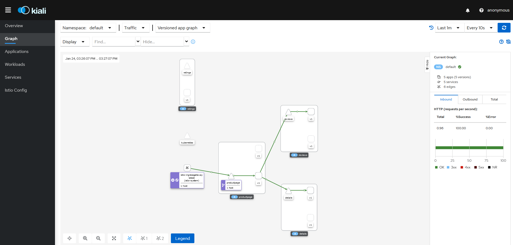
图8
reviews微服务v1版本不会调用ratings服务，所以图中ratings服务无流量通过。
监控Istio
访问Prometheus控制台（http://master_IP:30090），如图所示：

图9
在Expression输入框中输入要查询的参数，然后点击Execute按钮即可在Console中查看查询结果。
查询请求时采用istio_requests_total指标，这是一个标准的Istio指标。
如查询命名空间的所有请求（istio_requests_total{destination_service_namespace=“default”, reporter=“destination”}），如图所示：

图10
查询reviews微服务的请求（istio_requests_total{destination_service_namespace=“default”, reporter=“destination”,destination_service_name=“reviews”}），如图所示：
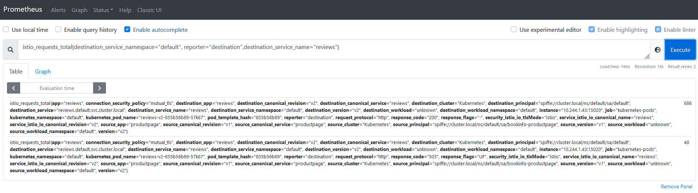
图11
灰度发布
部署新版本服务
将v2、v3版本的reviews服务部署到集群中，均为单一版本。新版本的reviews可以正常工作后，实际生产流量将开始到达该服务。在当前的设置下，50%的流量将到达旧版本（1个旧版本的Pod），而另外50%的流量将到达新版本（1个新版本Pod）。
部署v2版本的reviews微服务并开启Istio：
1 | [root@k8s-master-node1 ServiceMesh]# cat bookinfo/reviews-v2.yaml | istioctl kube-inject -f - | kubectl apply -f - |
查看Pod：
1 | [root@k8s-master-node1 ServiceMesh]# kubectl get pods |
访问Bookinfo应用程序页面，如图所示：
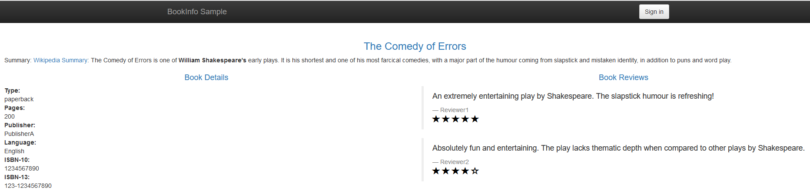
图12
观察评级上的星标，发现有时返回的页面带有黑色星标（v2版本、大约三分之一的时间），有时带有红色星标（v3版本、大约三分之一的时间），有时不带星标（v1版本、大约三分之一的时间），这是因为没有明确的默认服务版本和路由，Istio将以循环方式将请求路由到所有可用版本，所以三种评分结果出现的概率均为三分之一。
查看实时流量监控，如图所示：

图13
可以看到，v2和v3版本的reviews微服务已正常工作，因v2和v3版本会调用ratings服务，所以图中ratings服务也有流量通过。
请求路由
Bookinfo应用程序包含四个独立的微服务，每个微服务都有多个版本。其中一个微服务reviews的3个不同版本已经部署并同时运行。因为没有明确的默认服务版本和路由，Istio将以循环方式将请求路由到所有可用版本。这样将导致在浏览器中访问Bookinfo应用程序时，输出有时包含星级评分，有时则不包含。
Kubernetes方式下控制流量分配需要调整每个Deployment的副本数目。例如，将10％的流量发送到金丝雀版本（v2），v1和v2的副本可以分别设置为9和1。由于在启用Istio不再需要保持副本比例，所以可以安全地设置Kubernetes HPA来管理三个版本Deployment的副本：
1 | [root@k8s-master-node1 ServiceMesh]# kubectl autoscale deployment reviews-v1 --cpu-percent=50 --min=1 --max=10 |
如果要仅路由到一个版本，请为微服务设置默认版本的Virtual Service。在这种情况下，Virtual Service将所有流量路由到每个微服务的v1版本。
默认请求路由配置文件如下：
1 | [root@k8s-master-node1 ServiceMesh]# cat virtual-service-all-v1.yaml |
配置默认请求路由：
1 | [root@k8s-master-node1 ServiceMesh]# kubectl apply -f virtual-service-all-v1.yaml |
现在已将Istio配置为路由到Bookinfo微服务的v1版本，最重要的是reviews服务的v1版本。
在浏览器中打开Bookinfo站点，如图所示：
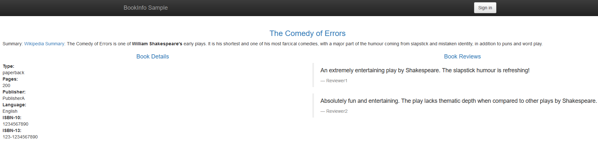
图14
此时无论刷新多少次，页面的评分部分都不会显示评级星标。这是因为Istio被配置为将评分服务的所有流量路由到v1版本的reviews，而此版本的服务不调用星级评分服务。
查看实时流量监控，也可以看到此时无流量流向v2和v3版本，如图所示：
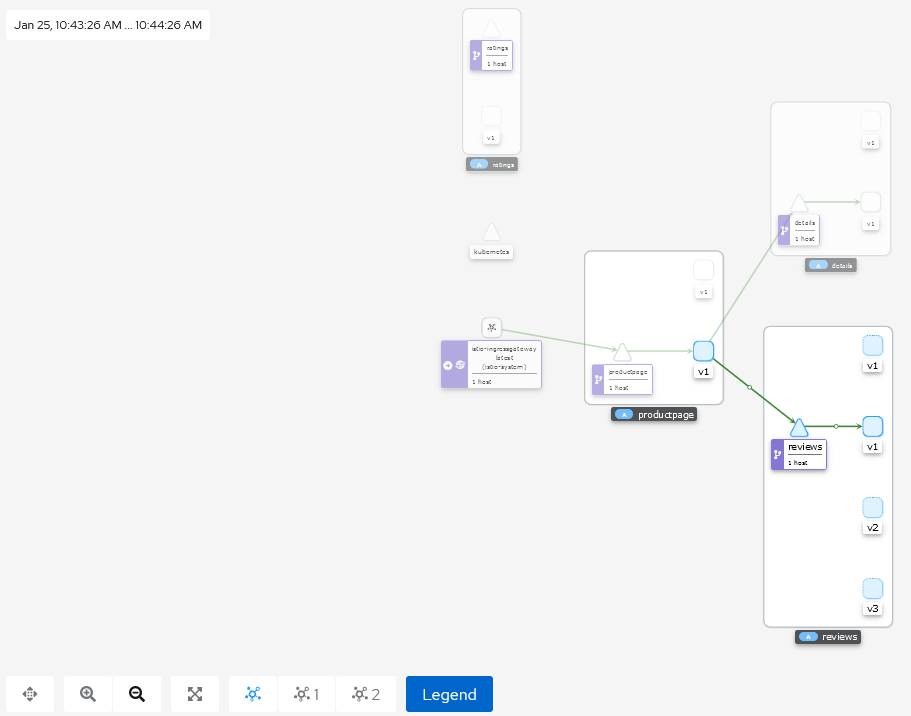
图15
流量转移
使用下面的命令把50%的流量从reviews:v1转移到reviews:v3（金丝雀版本）：
1 | [root@k8s-master-node1 ServiceMesh]# cat virtual-service-reviews-50-50.yaml |
当规则设置生效后，Istio将确保只有50%的请求发送到金丝雀版本，无论每个版本的运行副本数量是多少。
刷新浏览器中的/productpage页面，因为reviews的v3版本可以访问带星级评价服务，而v1版本不能，所以大约有50%的几率会看到页面中带红色星级的评价内容，如图所示：
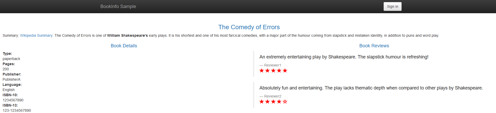
图16
在Kiali上查看实时流量监控，可以看到流量已经流向了v3版本，如图所示：

图17
点击productpage服务与reviews服务之间的连线，在右侧可以看到每秒发送到reviews服务的http请求为0.96，如图所示：

图18
点击reviews服务和v1版本之间的连线，可以看到v1版本每秒接收到的http请求为0.49，如图所示：

图19
点击reviews服务和v3版本之间的连线，可以看到v3版本每秒接收到的http请求为0.47，如图所示：

图20
说明流向reviews服务的流量各有50%流向了v1和v3，路由规则应用成功。
假如认为reviews:v3微服务已经稳定，可以通过应用Virtual Service规则将100%的流量路由reviews:v3：
1 | [root@k8s-master-node1 ServiceMesh]# cat virtual-service-reviews-v3.yaml |
再次刷新/productpage时，将始终看到带有红色星级评分的书评。
查看实时流量，发现流量全部流向v3，如图所示：
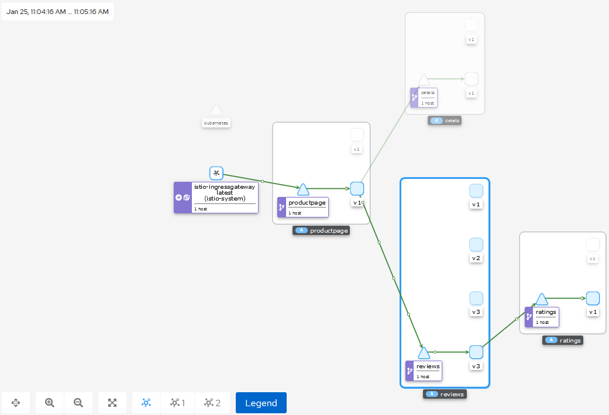
图21
流量镜像
流量镜像，也称为影子流量，是一个以尽可能低的风险为生产带来变化的强大的功能。镜像会将实时流量的副本发送到镜像服务。镜像流量发生在主服务的关键请求路径之外。
初始化默认路由规则，将所有流量路由到服务的v1版本：
1 | [root@k8s-master-node1 ServiceMesh]# kubectl apply -f virtual-service-all-v1.yaml |
改变reviews服务的流量规则，将v1版本的流量镜像到v2版本：
1 | [root@k8s-master-node1 ServiceMesh]# cat virtual-service-mirroring.yaml |
分布式追踪
分布式追踪可以让用户对跨多个分布式服务网格的1个请求进行追踪分析。这样进而可以通过可视化的方式更加深入地了解请求的延迟，序列化和并行度。
Istio利用Envoy的分布式追踪功能提供了开箱即用的追踪集成。确切地说，Istio提供了安装各种追踪后端服务的选项，并且通过配置代理来自动发送追踪Span到追踪后端服务。
登录Jaeger控制台（http://master_IP:30686），如图所示：
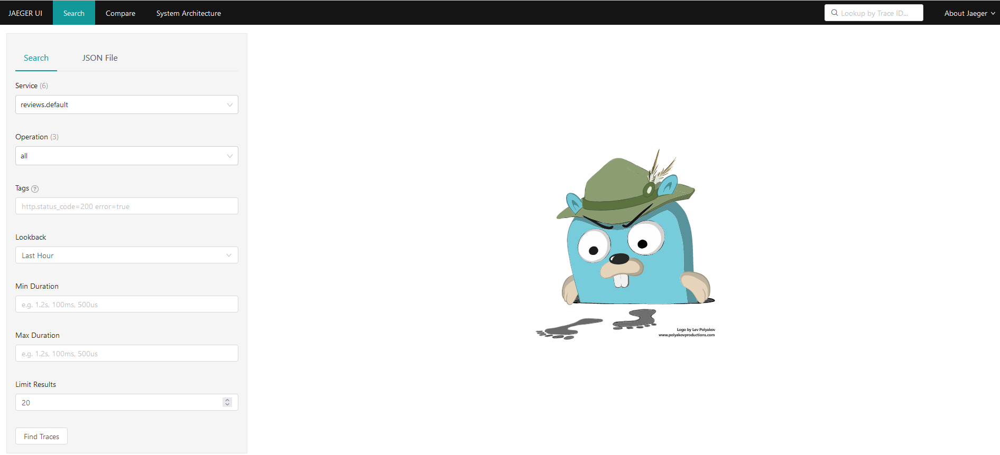
图22
从仪表盘左边面板的Service下拉列表中选择productpage并点击Find Traces，如图所示：
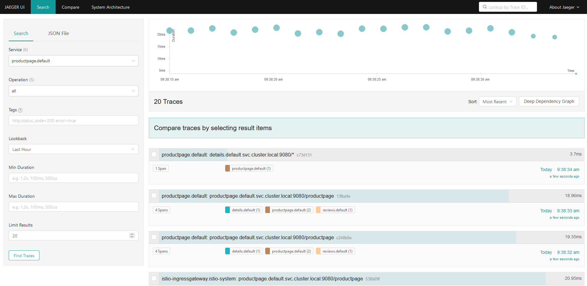
图23
点击位于最上面的最近一次追踪，查看对应最近一次访问/productpage的详细信息，如图所示：
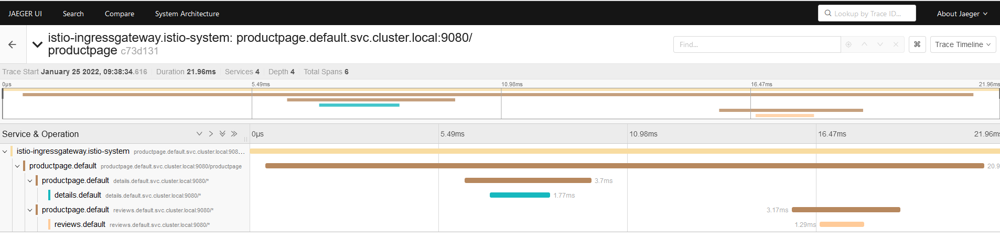
图24
追踪信息由一组Span组成，每个Span对应一个Bookinfo Service。这些Service在执行/productpage请求时被调用，或是Istio内部组件。